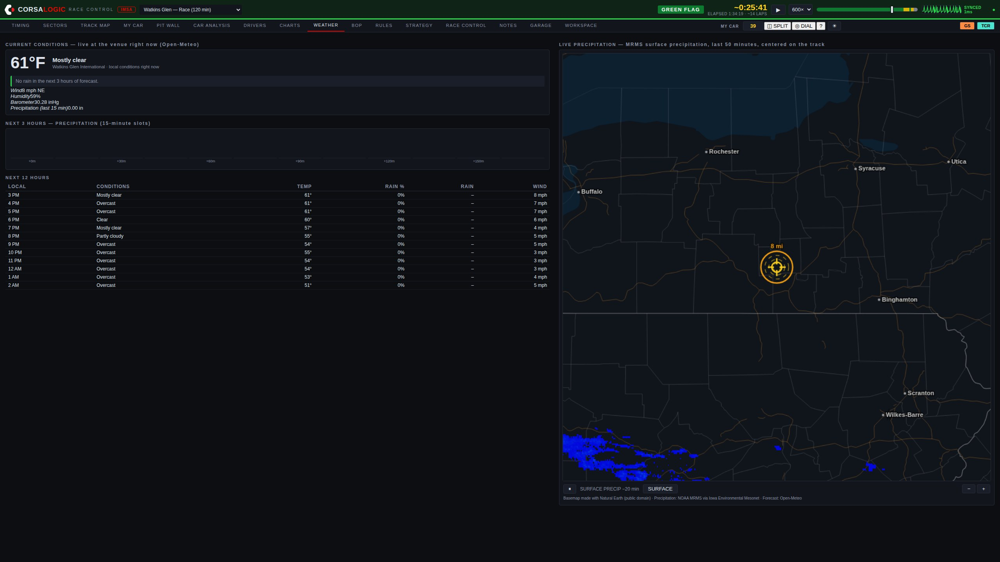
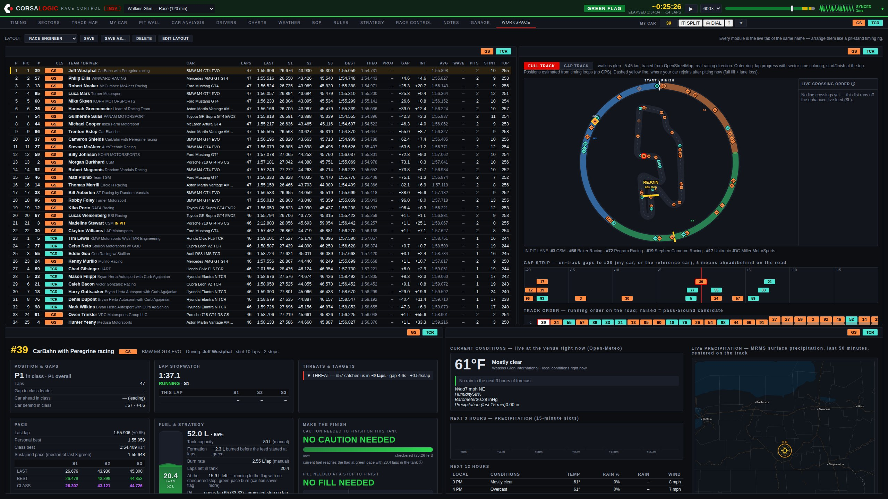
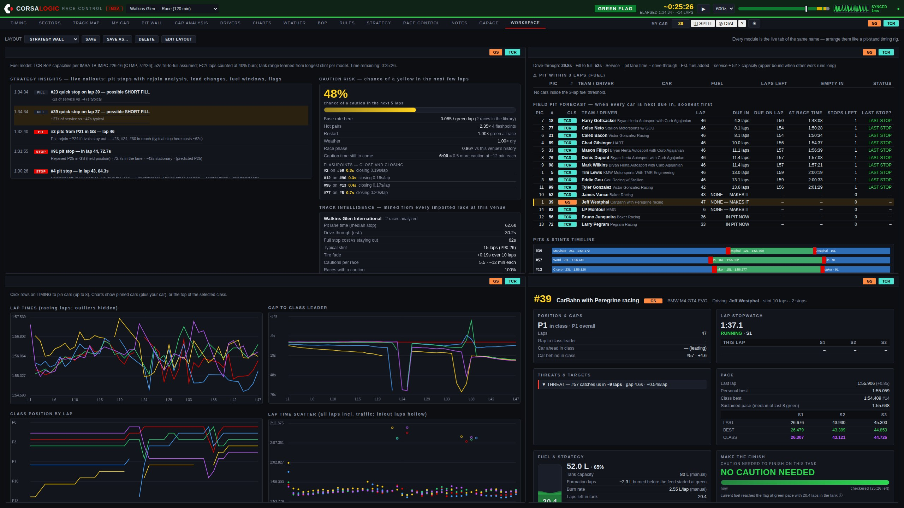
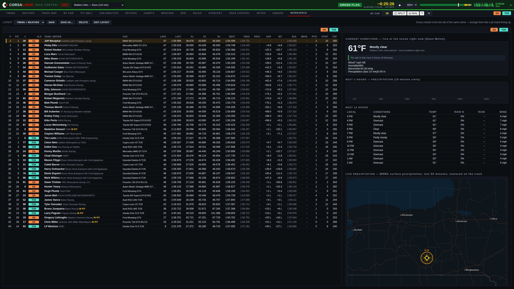
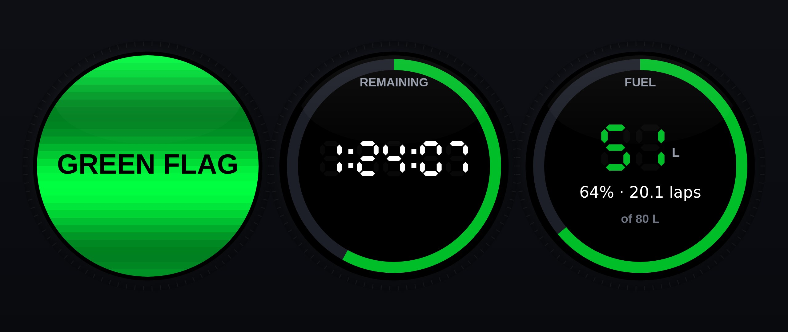

Software
Race Control.
Live timing, strategy, and AI race insights for IMSA competitors — in the browser, on the pit stand, ready before the green flag.

The information a factory team pays a stand full of engineers to watch — read out loud, on time, to your team.
Strategy
An AI race engineer on the feed.
Race Control watches every timing line and calls out what matters, the moment it happens — with predictions built from a library of past races at the same circuit.

- Pit stops, decoded. When a rival pits you get the lap, the time in the lane, and a rejoin prediction — before they're back up to speed.
- Short fills, flagged. A stop far quicker than the field's usual gets called out the moment it happens — with the liters the fill model says actually went in.
- Windows on your lap numbers. Pit windows for the whole field read "opens lap 49 · stop lap 51", not arithmetic you do in your head.
- Track intelligence. Pit-lane loss, stint lengths, caution frequency and timing — mined from real races at this venue, not rules of thumb.
Track position
See the race, not just the column of numbers.
Every car lives on a map of the real circuit, wrapped in a lap-progress ring. Under caution, the safety car is marked and the running order re-forms in front of you.

- Pass-around answers. During full-course yellows, Race Control tells you plainly whether your car is a wave-by candidate — green when you are, red when you're not.
- The rejoin marker. A pin on the circuit showing exactly where your car comes back out if it pits now, with the live cost of the stop in seconds — it moves as your tank empties.
- Live crossing order & gap strip. The physical order on the road from the timing loops, plus a strip of on-track gaps around your car — who's ahead and behind on the tarmac, in seconds.
- Battles ticker. Who's catching whom, at what rate, and how many laps until it matters.
Fuel
The tank, modeled — and corrected by your driver.
A live fuel ledger for your car: a liquid tank gauge with laps of fuel inside it, a lap-by-lap trend chart, and the stop precomputed — down to the seconds of hose time to reach the finish.

- Your numbers. Set the tank capacity and your measured liters-per-lap; every account keeps its own fuel settings, private to your team.
- Dash reports. Radio the fuel reading in, type it once, and the whole model re-anchors to reality — and it all survives a mid-race restart.
- The call, ready. Projected stop lap, fill-to-full and fill-to-finish in seconds at the real fill rate — honest about the physical tank, and about whether one stop is enough.
- Fuel at the flag. The litres left in the tank at the chequered if you run it to the end — or exactly how many short you are, agreeing with the stop the window is already calling.
- Short fills, answered before you commit. Type the litres and see the hose time, the total stop cost, the laps it buys — and which cars you'd come back out between on track.
- Commands that can't get lost. Every fuel entry is held until the server confirms it, retried across reconnects, and flagged on screen until it lands — a call made on bad WiFi never dies silently.
Weather
The rain call, on your own radar.
Current conditions at the venue, hour-by-hour forecast, minutes-to-rain — and animated precipitation radar centered on the circuit, served entirely from our own infrastructure so paddock networks can't take it away.

- Storm rings. 2, 4, 6 and 8-mile range rings around the circuit — the lightning-hold brackets race officials actually use, drawn on the map.
- Minutes to rain. The forecast reduced to the one line a pit wall acts on: when water arrives, in minutes, with 15-minute precipitation slots for the next three hours.
- Circuit-proof by design. Basemap and radar tiles are served from Race Control's own servers — no third-party map host a venue firewall can block.
- Honest when it can't see. If radar imagery is unavailable, the map says so in words — it never quietly shows you an empty sky.
Workspace
Build your own pit stand.
Every screen in Race Control is a module. Arrange up to eight of them on one display — timing beside the map beside your car beside the radar — exactly the way professional timing workbooks do it, in the browser. Three of the built-in layouts:
Race engineer — timing, track map, MY CAR and radar on one screen

Strategy wall — the insight feed, field pit forecast, charts and MY CAR

Timing + weather — the full scoreboard with conditions and radar beside it

- Drag, resize, swap. Move a module by its title bar, resize by the corner, change what any cell shows. Each module is fully live with its own class filter — one panel on GS, the next on TCR.
- Layouts that follow you. Save named layouts to your account: the rig you build at the shop is on the pit-stand laptop when you sign in. Presets get a new team started in one click.
- One car, every panel. Set MY CAR once and every module follows it instantly. A second monitor is just another window with a different layout loaded.
Pit Dial — hardware
One number, readable from across the box.
A round USB knob display for the pit stand, fed over the same cable that powers it. Rotate the knob and the whole screen becomes the flag, the session clock, the pit window, your fuel, your gap, the weather, or a stint timer.

- No WiFi, no configuration. The browser feeds it over the USB cable — plug it in, press DIAL on the timing page, done. It holds no credentials and joins no network.
- The screen is the flag. On a flag change the ring under the base flashes until the knob is pressed — peripheral vision, engineered.
- Pit-stop takeover. When your car crosses the pit line the dial becomes a stop timer, then shows the total and re-arms the stint clock as it leaves.
- Honestly STALE. If frames stop arriving it says so, and how long ago — a pit display that lies is worse than one that is obviously down.
Everything else a race weekend asks
One login. The whole pit stand.
Timing & analysis suite
Multi-class scoreboard with sectors, bests, gaps and stints — plus the analysis screens professional timing tools charge four figures for: sector comparison, lap analysis, pit stop matrix, gap chart, all-laps tables, and CSV export of everything.
A clock that thinks in laps
Beside the time remaining, the laps remaining — computed from the leader's live pace, aware that a caution slows the answer down. It counts to "FINAL LAP" so nobody on the stand is doing division at the flag.
Balance of Performance
Current GS and TCR BoP in clean tables, with race-to-race changes highlighted the moment a new bulletin drops.
Rulebook, answered
Ask questions in plain English — "can we use a floor jack over the wall if the air jacks fail?" — and get answers cited to the article, straight from the current IMSA regulations.
A library of complete past race weekends, grouped by championship. Re-run any session at any speed, and scrub by flag: the seek bar is painted with the race's flag history, so a caution or a restart is a color you drag to. Notes written during the race jump the replay straight to their moment.
A library that heals itself
Every byte of the live feed is captured raw. If a mid-race dropout ever tears a recording, Race Control rebuilds the complete session from the captures automatically — no one has to notice, because nothing goes missing.
Stewards' corrections
Official best-lap corrections, Retired and Excluded status, and corrected finish data from the stewards' channel flow straight into the running order.
Drive time, decided
Each driver against the minimum, the legal swap window on your lap numbers — and once everyone has served their time, one word: COMPLIANT.
Engineered for circuit internet
Paddock WiFi drops without warning, and most software lies about it. Race Control doesn't: a heartbeat in the header beats once per message actually delivered — it physically cannot look healthy over a dead link — and shows the measured round trip. Every command you press is held until the server confirms it, retried across reconnects, and flagged on screen until it lands. A fuel call made on bad WiFi is never silently lost.
The whole field's next stop
A pit forecast for every car when each one is next due in: laps until the window, the earliest lap they can make it on fuel, stops left to the flag — and NONE, MAKES IT for the cars that don't have to come back.
Notes, stamped to the race
Session notes and driver debriefs land stamped to the race clock — in a replay, the stamp is a link straight to the moment. Your season's record, attached to the races themselves.
Tires & component life
Tire sets with laps accumulated per stint, and component lifing against limits in laps, hours or events — the bar goes amber at 80%, red at 95%. The garage travels with your account.
INDYCAR, too
Race Control for the NTT INDYCAR SERIES runs as its own product at indycar.corsalogic.com — separate accounts, separate data, the same cockpit.
How it works
Nothing to install. Race Control runs in the browser — pit stand, garage, or the couch back home — and reads the same live timing feed the series broadcasts trackside. If the internet at the circuit fails you, the cloud timing path keeps the data flowing.
Per-seat accounts. Each team seat gets its own login. Access is activated on payment, and everything your crew sees stays inside your account.
The manual is in the app. Press ? and the help opens at the screen you're on — a 60-second tour for a new crew member, plain-language answers for everything else. Every screen ships documented; the build fails if one doesn't.
Built by a race engineer. Race Control is developed and run by CorsaLogic and used on our own pit stand — including on circuit WiFi bad enough to shape the engineering. When something matters to the call, it matters to the product.
Put Race Control on your stand this season.
Request accessRace Control presents timing data originating from series timing providers; that data remains the property of its owners. Strategy outputs, projections, and race-procedure indications (including pass-around eligibility) are advisory — official determinations always belong to the sanctioning body. CorsaLogic Race Control is an independent product and is not affiliated with or endorsed by IMSA.